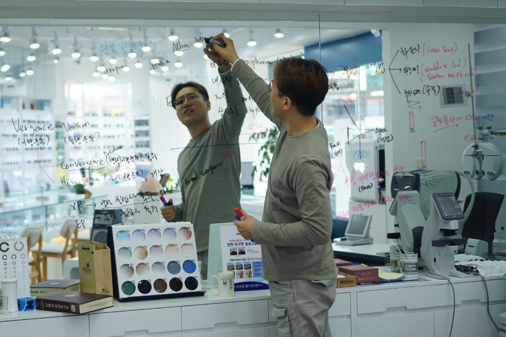

Process Overview
언커버의 4단계 맞춤 검안
단순히 도수만 측정하는 것이 아니라,
당신의 생활 패턴, 직업, 눈 상태를 종합적으로 분석하여
가장 적합한 안경을 제작하는 전문 프로세스입니다.

STEP 1 — 브리핑 검안
고객의 생활 습관, 직업, 취미, 기존 안경 사용 경험을 상세히 문진하고, 최첨단 검안 장비로 시력, 각막 형상, 안압, 시야 등을 정밀 측정합니다.
자세히 보기 →